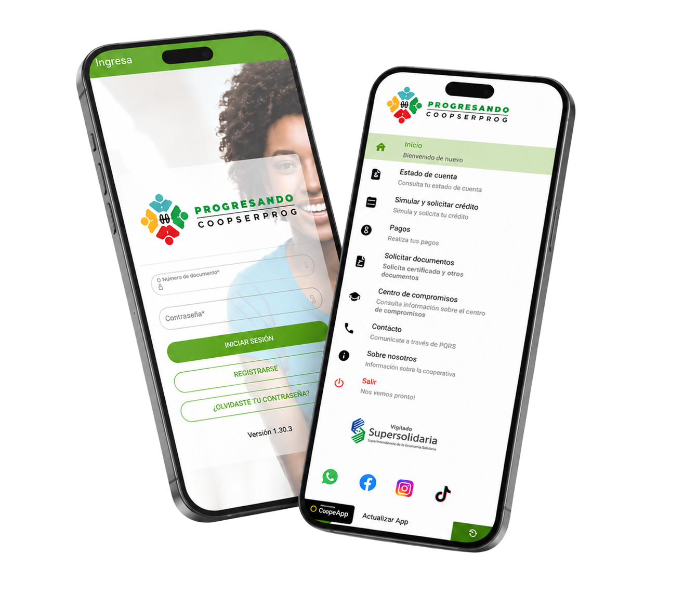

Únete a nosotros
Afíliate a COOPSERPROG
Todo lo que necesitas saber para ser parte de nuestra cooperativa
Ver requisitos
#Progress
Diligencia el formulario desde nuestra App
Completa tu afiliación desde tu celular de forma rápida, segura y sin papeles.
- Afiliación en línea desde tu celular
- Pago y simulación de créditos
- Convenios y Progrepuntos

Requisitos
Requisitos de Afiliación
Selecciona tu tipo de afiliación para conocer los requisitos
Persona Natural
- Ser mayor de edad (o desde 14 años con representante)
- Residir en Colombia
- Ingresos demostrables
- Aporte social inicial: $70.000
- Diligenciar formulario de afiliación
- Autorizar tratamiento de datos personales
Persona Jurídica
- Constitución legal y domicilio en Colombia
- Certificado de existencia y representación legal
- Aporte social inicial: $100.000
- Autorización de la junta directiva
- Diligenciar formulario de afiliación empresarial
- Cumplir con la normativa cooperativa
¿Listo para afiliarte?
Escríbenos al WhatsApp +57 322 8642938 y nuestro equipo te guiará en el proceso de afiliación.
Contactar por WhatsApp
Escanea el QR